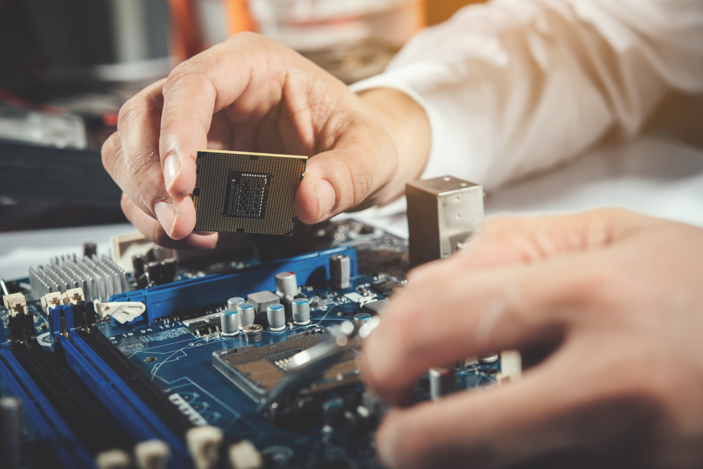

Consejos para el armado de una computadora
Armar una computadora por primera vez puede ser complicado pero con la práctica se va haciendo cada vez más sencillo. Para realizar un armado exitoso, debemos tener paciencia y prestar atención a algunos detalles básicos.

El armado de una computadora va más allá de solo conectar componentes. De hecho, requiere precisión para prevenir futuros fallos. A pesar de que parezca sencillo, cada paso influye en el rendimiento final del sistema. Por ejemplo, conectar mal un cable, puede arruinar una fuente de alimentación sin previo aviso; algún que otro descuido puede generar pantallazos azules. Por eso es importante dedicarle tiempo y paciencia al armado de una computadora, para evitar revisiones futuras.